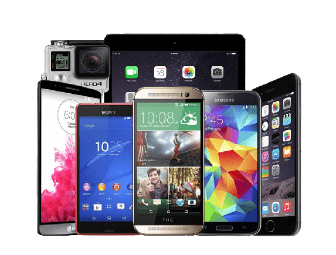

Mobile Details | |
|  | A mobile device (or handheld computer), also referred to as a digital assistant (or DA), is a computer, small enough to hold and operate in the hand. Mobile devices typically have a flat LCD or OLED screen, a touchscreen interface, and digital or physical buttons. They may also have a physical keyboard |